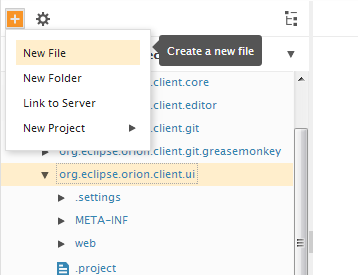
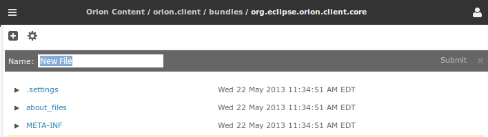

Working with folders and files
Creating folders and files
- On the
Editing page
select the folder where you want the new folder or file to be created.
- Click the New button (the orange '+' image) and select either New File or New Folder from the drop-down menu.

Type the new resource's name into the slideout and press Enter or click Submit (or press Esc to abort creation of the resource).

Deleting folders and files
- On the
Editing page
select the folders/files to delete.
- Press the Delete key or select Delete from the Actions gear drop-down menu.

Renaming folders and files
- On the
Editing page
select the folder/file to rename.
- Press the Rename key (usually F2) or select Rename from the Actions gear drop-down menu.
Copying and moving folders and files
There are two methods available for copying files in Orion. The first method uses the clipboard:
- On the
Editing page
select the folders/files to copy.
- Press Ctrl+C to copy the selected files.
- Select the target folder to copy into and press Ctrl+V to paste the source folders/files into this folder.
You can also copy and move files using menu commands.
- On the
Editing page
select the folders/files to copy or move.
- Select Copy from the Actions gear drop-down menu.
- Select the target folder to copy into and and select Paste from the Actions gear drop-down menu to paste the source folders/files into this folder.
Updating this document
This document is maintained in a collaborative wiki. If you wish to update or modify this document please visit
http://wiki.eclipse.org/Orion/Documentation/User_Guide/Tasks/Working_with_folders_and_files